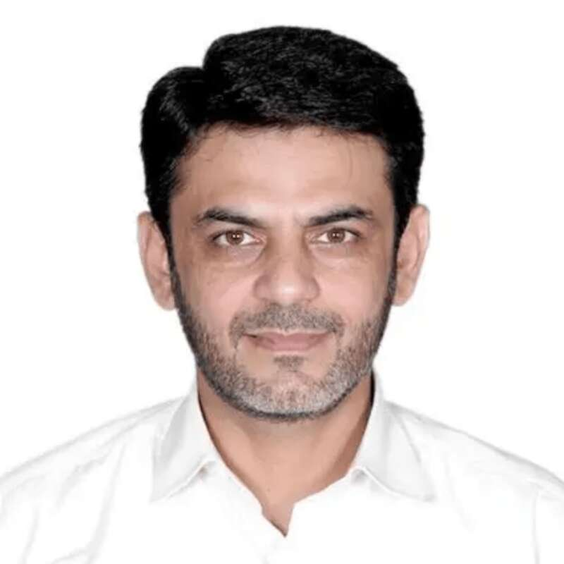
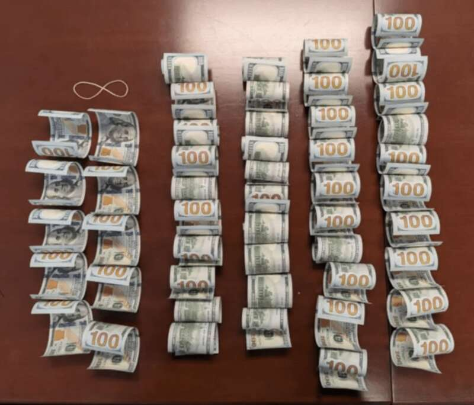
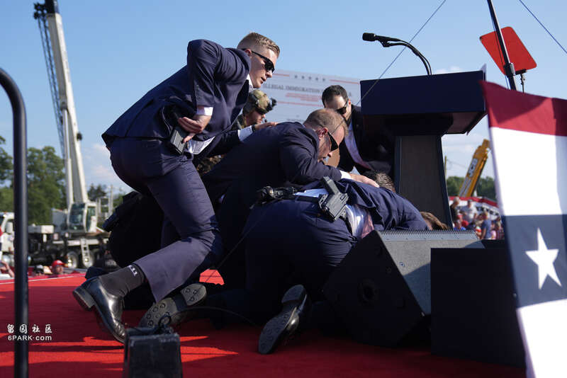
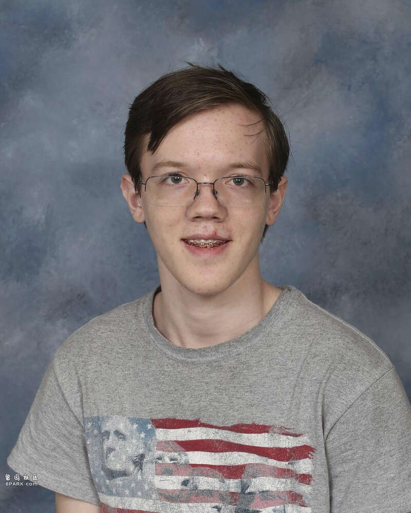

美联社
美国前总统、共和党2024年美国大选候选人特朗普早前遭枪手企图暗杀，震惊国际，而美媒报道，联邦调查局（FBI）揭发，想置特朗普于死地之人不只一个，一名据称与伊朗有联系的巴基斯坦移民曾一度策划雇用杀手，暗杀特朗普和其他美国政客。
纽约邮报报道，46 岁男子阿西夫·麦昌特(Asif Merchant) 被指控策划在今年8月或9月初进行政治暗杀，并向他「职业杀手」支付了5,000 美元的头款。据悉，特朗普是这项暗杀阴谋的目标之一。

46 岁男子阿西夫·麦昌特(Asif Merchant) 被指控策划8月或9月初进行政治暗杀，特朗普是这项暗杀阴谋的目标之一。

阿西夫向「职业杀手」支付了5,000 美元上期。

美国前总统特朗普早前在出席竞选活动时遇袭。美联社

早前在屋顶开枪企图刺杀特朗普的托马斯·克鲁克斯(Thomas Crooks)。美联社
美国前总统特朗普在出席竞选活动时遇袭，震惊全球。美联社
报道指，阿西夫于 6 月前往纽约，会见了由警方卧底假扮的「杀手」，并告诉他们他正在透过海外联络人安排资金。几天后，阿西夫提前拿出了现金，并通知「杀手」开始正式策划行动。7 月 12 日，当他准备离开美国时，当场被捕。
阿西夫在拘留期间表示，他有一个妻子和孩子住在伊朗，还有一个妻子和孩子住在巴基斯坦。
报道又称，阿西夫策划的暗杀阴谋，与早前在屋顶开枪企图刺杀特朗普的托马斯·克鲁克斯(Thomas Crooks)并无关连，但特勤局在托马斯·克鲁克斯行动前对特朗普加强了保安，阿西夫的暗杀阴谋则是导火线。
Advertisements